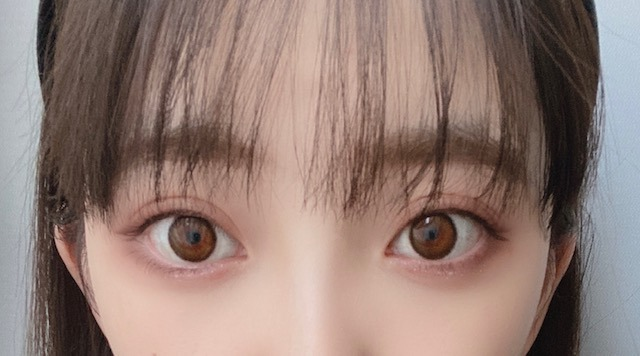

2020/0515Friはぐれっこ
じゃん
リモート撮影してみました
白黒の世界で生きてみました

悪い顔
tops ZARA
denim CLANE
choker DIOR
色がついた世界


アディクションの
赤みブラウンのアイシャドウ
にしてみました
写真集発売まであと12日! ✨
公式Twitter
@horimiona2nd
企画連載...もぐもぐ未央奈
もしています
公式Instagram
@horimiona_2nd
両方でたくさん盛り上げていきたいなと
思ってますので是非みなさん
覗きに来てくださいねヽ(*・ω・*)ﾉ
今日発売のFRIDAYの感想もお聞かせください!
では
2020/05/15 19:36
コメント(338)
未央奈、おはよう愛してる今日も可愛いね またね～
悪みおな♪ヽ(￣▽￣)ノその顔はお姉ちゃんのお菓子を狙ってる顔だな
未央奈ちゃんおはようございます‼ありがとうございます！頑張ります‼今日もお仕事頑張ってください！頑張ります‼すいません。
すちやよ♥️
赤みブラウン可愛い
真似してみよう
真似してみよう
未央奈ちゃん、おはよう。
昨日の朝浮かれまくってた罰なのか
ちょっとした事件があったんです。
いつものように出勤する為
車のドアを開けようとした時にやつが
出てきました。アシナガバチ…
あれっ⁉︎見間違いかなと思ってたら
やつはご丁寧にもまた車の中に戻って
行きました。恐る恐るそこを覗き込むと
なんと！そこには小さな蜂の巣が…
そんな事あります？
休み中も3日に1度くらい乗ってたし
仕事始まって何日かは毎日乗ってるし
いつの間にという感じ。
巣が出来た場所がまたいけなかった。
ドアの蝶番になってる所だったから
開けると巣がモロに車内から丸見え
になります。
さすがに退治しなければいけません。
虫は別に好きでも嫌いでもないけど
蜂は別ですよね、誰でも。
逃げ腰になりながら悪戦苦闘する事
30分くらいかな。無事駆除をして
やつにはご退場していただきました。
そんなのに気付かないなんてどんだけ
鈍感なんでしょうか。おかしいなぁ。
察する事には長けていると思ってた
んですが。
西瓜のもぐもぐも書きたかった…
あ、でも西瓜の種の話、僕は子供の頃に
種を食べるとお腹の中で西瓜が出来る
という話を信じていたので頑なに
吐き出してたけど、いつからかそれを
気にしなくなりそのまま食べたり
吐き出したりと気分次第です。
では。
昨日の朝浮かれまくってた罰なのか
ちょっとした事件があったんです。
いつものように出勤する為
車のドアを開けようとした時にやつが
出てきました。アシナガバチ…
あれっ⁉︎見間違いかなと思ってたら
やつはご丁寧にもまた車の中に戻って
行きました。恐る恐るそこを覗き込むと
なんと！そこには小さな蜂の巣が…
そんな事あります？
休み中も3日に1度くらい乗ってたし
仕事始まって何日かは毎日乗ってるし
いつの間にという感じ。
巣が出来た場所がまたいけなかった。
ドアの蝶番になってる所だったから
開けると巣がモロに車内から丸見え
になります。
さすがに退治しなければいけません。
虫は別に好きでも嫌いでもないけど
蜂は別ですよね、誰でも。
逃げ腰になりながら悪戦苦闘する事
30分くらいかな。無事駆除をして
やつにはご退場していただきました。
そんなのに気付かないなんてどんだけ
鈍感なんでしょうか。おかしいなぁ。
察する事には長けていると思ってた
んですが。
西瓜のもぐもぐも書きたかった…
あ、でも西瓜の種の話、僕は子供の頃に
種を食べるとお腹の中で西瓜が出来る
という話を信じていたので頑なに
吐き出してたけど、いつからかそれを
気にしなくなりそのまま食べたり
吐き出したりと気分次第です。
では。
アイシャドウいいね！今の髪の長さも好き
完全なモノトーンの世界の未央奈も見てみたい♪
完全なモノトーンの世界の未央奈も見てみたい♪
ブログ更新ありがとう
白黒の堀ちゃん素敵やね
もぐもぐ未央奈見たよ
スイカの種全部取ってから食べる方が面倒くさくなくて良いよね
白黒の堀ちゃん素敵やね
もぐもぐ未央奈見たよ
スイカの種全部取ってから食べる方が面倒くさくなくて良いよね
未央奈ちゃんおはよう!㊗Instagramフォローワー26万人突破おめでとう!もちろん、私もフォローしているよ!昨日、You Tubeを見てて、最新の未央奈ちゃんのないかぁと探していたら、オテンキのりさんとポンちゃんさでオテンキのりゲームチャンネルやってたので、思わず登録しました!未央奈ちゃんのりさんがYou Tubeやってたの知っていましたか?いつか、未央奈ちゃんもゲスト出演してのりさんとゲーム対決してほしいなあ。未央奈ちゃんが出演したり、未央奈ちゃんをはじめ、レコメンファミリーがゲスト出演や登録すれば絶対登録者数増えると思うよ!(現時点で約千人少し)超絶!かわいい 未央奈!大好きやおー!
お邪魔します
フライデー見ましたよ！
フルーツ選んでる所とかもぐもぐしてる所可愛いらしいですね
でも個人的には水着で振り返って照れ照れされているところがちょっと良かった。
髪もちょっとラフな感じで逆に新鮮な感じなのです
もうすぐ写真集の発売ですね
どぞお身体にお気を付けてお過ごし下さい
それではまた
フライデー見ましたよ！
フルーツ選んでる所とかもぐもぐしてる所可愛いらしいですね
でも個人的には水着で振り返って照れ照れされているところがちょっと良かった。
髪もちょっとラフな感じで逆に新鮮な感じなのです
もうすぐ写真集の発売ですね
どぞお身体にお気を付けてお過ごし下さい
それではまた
未央奈～～～～～～～～～～～～。
今日はくもりときどき雨。梅雨かな？イヤ～～～な天気です。あ～、こんな感じで夏を迎えるのはとってもイヤですね。未央奈の写真集で気分をあげていきましょ。なんつってぇ。夏前にコロナ収束して、乃木坂のライブが見たいッス。では、又、更新お願いしゃーす。
今日はくもりときどき雨。梅雨かな？イヤ～～～な天気です。あ～、こんな感じで夏を迎えるのはとってもイヤですね。未央奈の写真集で気分をあげていきましょ。なんつってぇ。夏前にコロナ収束して、乃木坂のライブが見たいッス。では、又、更新お願いしゃーす。
未央奈ちゃん更新ありがとう！
今回も安定の可愛さ！
最近は写真が多くて、たくさん未央奈ちゃんが見れて嬉しいです！
元気貰ってます！
写真集が楽しみで仕方がない！
早く見たいなー(^o^)
ではでは～
今回も安定の可愛さ！
最近は写真が多くて、たくさん未央奈ちゃんが見れて嬉しいです！
元気貰ってます！
写真集が楽しみで仕方がない！
早く見たいなー(^o^)
ではでは～
いつもが白すぎて白黒でも違和感なかった！
何かまた痩せた様な……お肉食べなさーい
未央奈ちゃん♡♡
更新ありがとうございます^^*
FRIDAY見ました！
未央奈ちゃん可愛すぎますよね(っ･ω･)っ♡
女神です✧︎
私の生きる糧です(´；ω；｀)
写真集発売までウキウキしてます(ง๑•ᴗ•๑)ว
未央奈ちゃん大好きです♡♡
更新ありがとうございます^^*
FRIDAY見ました！
未央奈ちゃん可愛すぎますよね(っ･ω･)っ♡
女神です✧︎
私の生きる糧です(´；ω；｀)
写真集発売までウキウキしてます(ง๑•ᴗ•๑)ว
未央奈ちゃん大好きです♡♡
堀ちゃん更新どうもありがとうございます! 写真集とても楽しみです！
ブログ更新ありがとう!!
可愛い〜♡♡
いいな〜そんなに可愛いくて♪
これからも体調に気をつけて頑張ってね!!
大好き♡♡
可愛い〜♡♡
いいな〜そんなに可愛いくて♪
これからも体調に気をつけて頑張ってね!!
大好き♡♡
口が、かくれんぼしてる
3枚目、品がありますねー
安定のかわいさ
3枚目、品がありますねー
安定のかわいさ
未央奈ちゃん!
ブログ更新ありがとう！
今日も可愛すぎ!
応援しているよ☺️☺️
ブログ更新ありがとう！
今日も可愛すぎ!
応援しているよ☺️☺️
今から写真集楽しみすぎです！
数ヶ月つらい事ばっかりだったけど
この日この時を待ってました！！
夏から楽しい事がたくさんあると思う！！！
思うじゃなくて絶対なる！！！
数ヶ月つらい事ばっかりだったけど
この日この時を待ってました！！
夏から楽しい事がたくさんあると思う！！！
思うじゃなくて絶対なる！！！
堀ちゃん、こんにちは！
わるい顔おもしろい
わるい顔おもしろい
おはよー！
気づいたら寝ちゃってて起きたらブログ更新されてて嬉しくてなんか得した気分になりましたw
あ、悪ガキ感の未央奈だ！w
白黒もオシャレな感じで良いね(^-^)/
でも、色のある世界で良かった。未央奈の可愛いさやメイクの良さもより分かるしね！
何かロング派なんだけど今回の未央奈のメイクやファッション、髪型とか雰囲気全体的に全部めっちゃ好きでいつも以上に可愛いくて困るw
ブログ更新ありがとー！いつか夢の内容の歌詞も披露してみてね。歌になったりしたら聞いてみたいな♪( ・∇・)
気づいたら寝ちゃってて起きたらブログ更新されてて嬉しくてなんか得した気分になりましたw
あ、悪ガキ感の未央奈だ！w
白黒もオシャレな感じで良いね(^-^)/
でも、色のある世界で良かった。未央奈の可愛いさやメイクの良さもより分かるしね！
何かロング派なんだけど今回の未央奈のメイクやファッション、髪型とか雰囲気全体的に全部めっちゃ好きでいつも以上に可愛いくて困るw
ブログ更新ありがとー！いつか夢の内容の歌詞も披露してみてね。歌になったりしたら聞いてみたいな♪( ・∇・)
みおなさ～ん、ファンタのラベル、全種類揃ったよ～。
コンプリート、コンプリート！
他の８人にも、報告しなくちゃ。
それはそうと、白黒の世界、趣がありますね。
色の情報がほぼ無い分、みおなさんの可愛さ、魅力、表情に関して、いつもとは違う良さが見えます！
そして、白黒の世界からフルカラーの世界へ戻る。
まるで、ミュージックビデオの世界を見ているようです！！
タイトルは、｢みおなの光輝く世界｣！
う～ん、どうかな～。
突然、白黒の世界にはぐれてしまうが、少しずつ色を見つけていき、フルカラーの世界になった瞬間、みおなさんが光輝きながら、歌唱している。
このような曲があったら、ぜひ、買いたい！
それでは、写真集やインスタなど、いつもいつも楽しみに見させていただきます！！
コンプリート、コンプリート！
他の８人にも、報告しなくちゃ。
それはそうと、白黒の世界、趣がありますね。
色の情報がほぼ無い分、みおなさんの可愛さ、魅力、表情に関して、いつもとは違う良さが見えます！
そして、白黒の世界からフルカラーの世界へ戻る。
まるで、ミュージックビデオの世界を見ているようです！！
タイトルは、｢みおなの光輝く世界｣！
う～ん、どうかな～。
突然、白黒の世界にはぐれてしまうが、少しずつ色を見つけていき、フルカラーの世界になった瞬間、みおなさんが光輝きながら、歌唱している。
このような曲があったら、ぜひ、買いたい！
それでは、写真集やインスタなど、いつもいつも楽しみに見させていただきます！！
写真集絶対買う
楽しみにしてるー
でわまた。
みおなかわいい！
堀さん、こんにちは。
最初の三枚の写真。完全なモノクロかと一瞬思ったのですが、リップの赤味を見て色彩の世界に戻ってきました。モノクロで、ある一色だけ際立たせている写真、いいですよね。
2ndソロ写真集発売まで11日。いよいよ秒読み間近です。ご紹介の公式Twitterの「もぐもぐ未央奈」も今観てきたのですが、正直後悔しました……だってまだご飯食べてないからお腹空いてるんだもん！（笑）
ということでこれからご飯食べてきます。食後のフルーツは何がいいかな〜。
ではまたコメント寄せます。
さらばだ、また会おう！（気球に乗って去りぬ〜）
最初の三枚の写真。完全なモノクロかと一瞬思ったのですが、リップの赤味を見て色彩の世界に戻ってきました。モノクロで、ある一色だけ際立たせている写真、いいですよね。
2ndソロ写真集発売まで11日。いよいよ秒読み間近です。ご紹介の公式Twitterの「もぐもぐ未央奈」も今観てきたのですが、正直後悔しました……だってまだご飯食べてないからお腹空いてるんだもん！（笑）
ということでこれからご飯食べてきます。食後のフルーツは何がいいかな〜。
ではまたコメント寄せます。
さらばだ、また会おう！（気球に乗って去りぬ〜）
Friday届くの福岡だから月曜日や
モノトーン未央奈ちゃん可愛い
モノトーン未央奈ちゃん可愛い
みおな
こんにちは
今日は休みなので起きたら、ほぼお昼でした
仕事の日は自動で6時に目が覚めるけど、休みの日は、起きるとお昼なので、不思議なものです
本来なら午後から出掛けるけど、今は午後も家にいます
白黒写真可愛いです
赤みブラウンアイシャドウ？も可愛いです
確かに女の子の目まわりは、よく見るとそんな色してる事があるので、勉強になります
写真集も楽しみです
インスタのフォロワーも26万人を超えたとLINEニュースになってたからすごいよね
FRIDAYの表紙もチェックしました
楽天ブックス版の表紙だった（本当にいい表紙だよね）
袋とじも気になるから買うか考えます
今は無理だけど、いつかお渡し会があるのかも気になっています
去年の握手会の時に、みおなに直接聞いたら、多分あるって言ったから、いつかできたら嬉しいです（発売後でも是非）
じゃあまた！
ありがとうございました
こんにちは
今日は休みなので起きたら、ほぼお昼でした
仕事の日は自動で6時に目が覚めるけど、休みの日は、起きるとお昼なので、不思議なものです
本来なら午後から出掛けるけど、今は午後も家にいます
白黒写真可愛いです
赤みブラウンアイシャドウ？も可愛いです
確かに女の子の目まわりは、よく見るとそんな色してる事があるので、勉強になります
写真集も楽しみです
インスタのフォロワーも26万人を超えたとLINEニュースになってたからすごいよね
FRIDAYの表紙もチェックしました
楽天ブックス版の表紙だった（本当にいい表紙だよね）
袋とじも気になるから買うか考えます
今は無理だけど、いつかお渡し会があるのかも気になっています
去年の握手会の時に、みおなに直接聞いたら、多分あるって言ったから、いつかできたら嬉しいです（発売後でも是非）
じゃあまた！
ありがとうございました
スレンダービューティー！
FRIDAYを2冊買ってしまいました。癒やされます。
ブログありがとー
じゃん
これから５月の後半、堀ちゃんの
怒涛の雑誌への登場(;゜0゜)
そしてそして2nd写真集発売！
忙しくなります(嬉しい悲鳴)
悪い顔( ｀Д´)/
いい顔してるーーーーお気に入りです
では
みおなちゃん、大好きです
未央奈ちゃん、 こんにちは！
唐突ですけど、未央奈ちゃんの夢って、白黒ですか？多分カラーだと思いますが、自分が子供の頃は白黒テレビもまだあったんで、白黒の夢も見ます。モノクロの服も写真も雰囲気があっていいですね！
それでは
唐突ですけど、未央奈ちゃんの夢って、白黒ですか？多分カラーだと思いますが、自分が子供の頃は白黒テレビもまだあったんで、白黒の夢も見ます。モノクロの服も写真も雰囲気があっていいですね！
それでは
オシャレな未央奈さんによく似合っててかわいいです。
めっちゃかわいかった〜
みおなちゃん、こんにちは。
FRIDAY、僕はまだ見れてないので、チェックしとくね。
白黒写真のみおなちゃん、どれもめっちゃかわいいです。
みおなちゃん、体調に気をつけてね。
またコメントするね。
FRIDAY、僕はまだ見れてないので、チェックしとくね。
白黒写真のみおなちゃん、どれもめっちゃかわいいです。
みおなちゃん、体調に気をつけてね。
またコメントするね。
白黒の世界も悪くないですね笑
首に巻いてるものは何ですか？
首に巻いてるものは何ですか？
悪未央奈可愛い～(*^^*)
未央奈ちゃんこんにちは!昨日You Tube見てたら、７〜8年前のバナナマンさんとオテンキのりさんの共演してた時の番組やってた!バナナマンさんの番組に芸人さんがネタをやる番組で、その一組がオテンキさんでした!バナナマンさんから結構うけてたよ。乃木坂工事中とかにもゲスト出演してほしいですね。バナナマンさん、オテンキさん、未央奈ちゃんの共演見てみたい。日村さんとのりさん、未央奈ちゃんのショートコントや漫才見てみたい
悪い未央奈ちゃん、なんか惹かれますね。
おしゃれでとても可愛いです。
もぐもぐ未央奈見てます。
未央奈ちゃんは何を食べるにも、すごく美味しそうに食べますね。とても大事なことだと思います。
ブログを頻繁に更新してくれて、いつもありがとうございます。
おしゃれでとても可愛いです。
もぐもぐ未央奈見てます。
未央奈ちゃんは何を食べるにも、すごく美味しそうに食べますね。とても大事なことだと思います。
ブログを頻繁に更新してくれて、いつもありがとうございます。
みおなさ～ん、タイトルの｢はぐれっこ｣で昨日、｢アナスターシャ｣のMVを観ていた話を思い出しました。
うち、久しぶりに｢アナスターシャ｣のMVを観て、自然と涙が流れてきたんです！
そして、｢琴子さん、元気かな～？｣と、ふと頭によぎったんです。
そしたら、すごいことが起こったんです！
琴子さん、インスタを始めたと聞いて、急いで、琴子さんのインスタを見ました！
こんなことがあるんだなと。
みおなさん、琴子さんのインスタ、見ましたか？
とても元気そうだから、心が和んだよ！
うち、久しぶりに｢アナスターシャ｣のMVを観て、自然と涙が流れてきたんです！
そして、｢琴子さん、元気かな～？｣と、ふと頭によぎったんです。
そしたら、すごいことが起こったんです！
琴子さん、インスタを始めたと聞いて、急いで、琴子さんのインスタを見ました！
こんなことがあるんだなと。
みおなさん、琴子さんのインスタ、見ましたか？
とても元気そうだから、心が和んだよ！
nnkgzzwkがあなたの投稿に「いいね 」しました。
」しました。
堀ちゃんこんにちは〜
カラーも白黒もどっちも可愛いっす！今日は寝すぎました。午前2時に寝て、(音楽聴きながら寝落ち)12時に起きた。１日の半分を睡眠に使い果たしましたw
Amazonで注文したダンベルも明後日に届くので楽しみ〜。後はオールナイトニッポンに送る岐阜の自虐ネタを考えてのんびり過ごしてます。SHOW ROOM配信がコロナの影響で中止になってるから早く復活してほしーーーー！！
インスタのフォロワー多分26万人だったかな？おめでと！！僕もちゃんとフォローしてます！！！これからも数伸びるといいですね！！
最近見てるYouTubeがあるんですけど、友達に教えてもらって見たら笑っちゃいましたw「しまじろうサイコパス」って調べたら出てくると思うのでぜひ見てみて！！
カラーも白黒もどっちも可愛いっす！今日は寝すぎました。午前2時に寝て、(音楽聴きながら寝落ち)12時に起きた。１日の半分を睡眠に使い果たしましたw
Amazonで注文したダンベルも明後日に届くので楽しみ〜。後はオールナイトニッポンに送る岐阜の自虐ネタを考えてのんびり過ごしてます。SHOW ROOM配信がコロナの影響で中止になってるから早く復活してほしーーーー！！
インスタのフォロワー多分26万人だったかな？おめでと！！僕もちゃんとフォローしてます！！！これからも数伸びるといいですね！！
最近見てるYouTubeがあるんですけど、友達に教えてもらって見たら笑っちゃいましたw「しまじろうサイコパス」って調べたら出てくると思うのでぜひ見てみて！！
未央奈さんブログ更新忙しいのにマメにしてくれてありがとう。Instagram見てからブログ見てねって書いてあったから します。昨日は調子崩して検査入院して今日14時に帰ってきたよ。痛風です。未央奈さん可愛い❤️し常に尊敬しています。未央奈さんもいっぱい食べる から太りすぎないように心得て。写真集買うから楽しみに待ってます。では
こんにちは‼︎
ブログ更新、ありがとうございます♪
白黒の世界で生きてみることにしたんですね‼︎
さすが、決めたらすぐの人ですね(笑)。
白黒写真、レトロな感じでとってもおしゃれ‼︎
何より、黒は女性を美しく見せますからね(笑)。
最初の写真、『悪い顔』ってタイトル付けているけど…
イタズラ子猫ぐらいの悪さですね(笑)。
可愛さは失わないところがさすがです♪
写真集の発売ももうすぐ。
自分の誕生日も近いので、自分にとっては誕生日プレゼントみたいなものですね♪
どんな仕上がりになっているのかなあ。
贈り物の蓋を開ける時みたいに、ワクワクしてます♪
ではでは、また。
明日も未央奈にとっていい1日になりますように♪
ブログ更新、ありがとうございます♪
白黒の世界で生きてみることにしたんですね‼︎
さすが、決めたらすぐの人ですね(笑)。
白黒写真、レトロな感じでとってもおしゃれ‼︎
何より、黒は女性を美しく見せますからね(笑)。
最初の写真、『悪い顔』ってタイトル付けているけど…
イタズラ子猫ぐらいの悪さですね(笑)。
可愛さは失わないところがさすがです♪
写真集の発売ももうすぐ。
自分の誕生日も近いので、自分にとっては誕生日プレゼントみたいなものですね♪
どんな仕上がりになっているのかなあ。
贈り物の蓋を開ける時みたいに、ワクワクしてます♪
ではでは、また。
明日も未央奈にとっていい1日になりますように♪
みおな〜 ブログ更新ありがとう
可愛い^ ^
可愛い^ ^
みおなちゃん更新ありがとう╰(*´︶`*)╯♡
白黒も味があって良きですな(*´꒳`*)
可愛いです（╹◡╹）♡
FRIDAYはまだこっちの地域は出てないから発売されたらチェックするねー
白黒も味があって良きですな(*´꒳`*)
可愛いです（╹◡╹）♡
FRIDAYはまだこっちの地域は出てないから発売されたらチェックするねー
未央奈ちゃん。ブログ更新ありがとう！やはり、色のついに世界のほうが、いいです。FRIDAY みました。ワンピ 姿可愛い❤️です。


もぐもぐスイカ配信も可愛くて良かったよ。